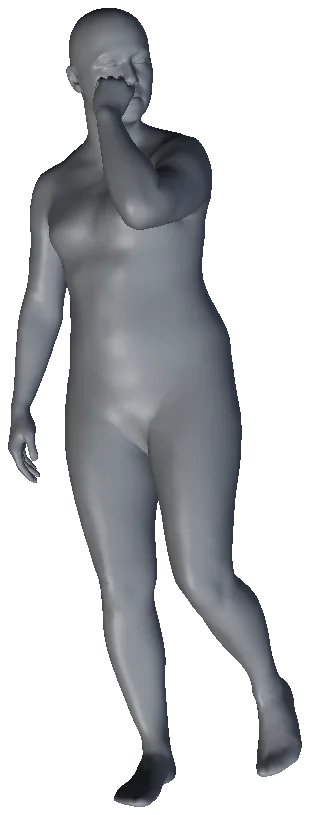
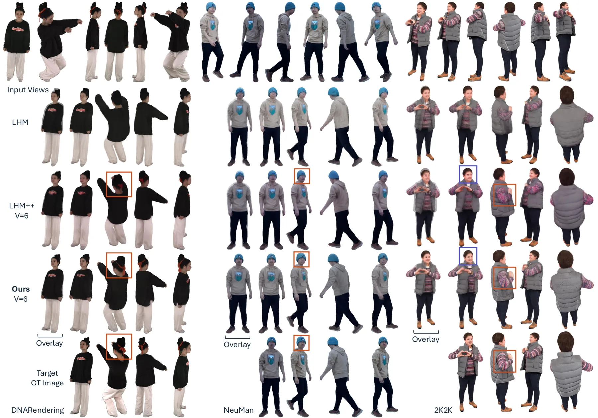
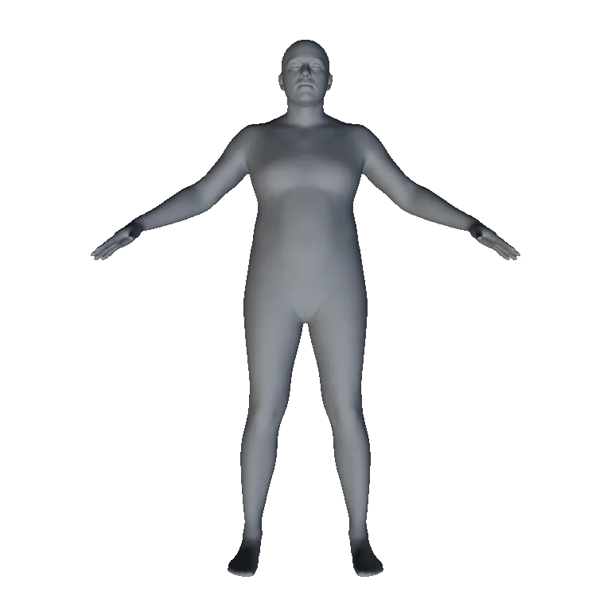
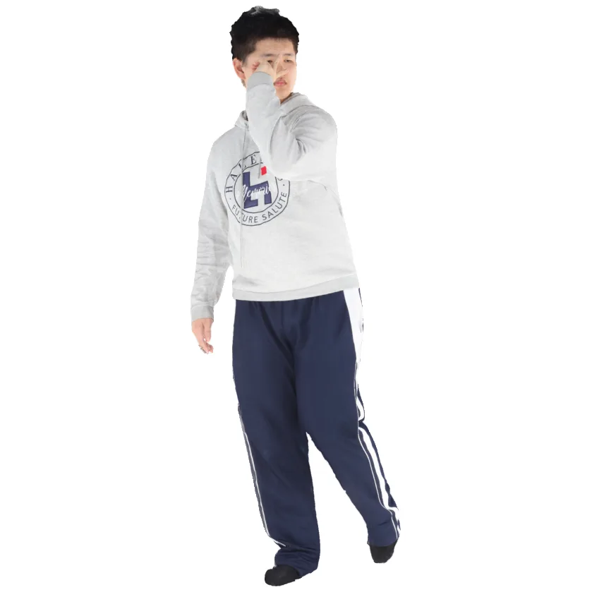
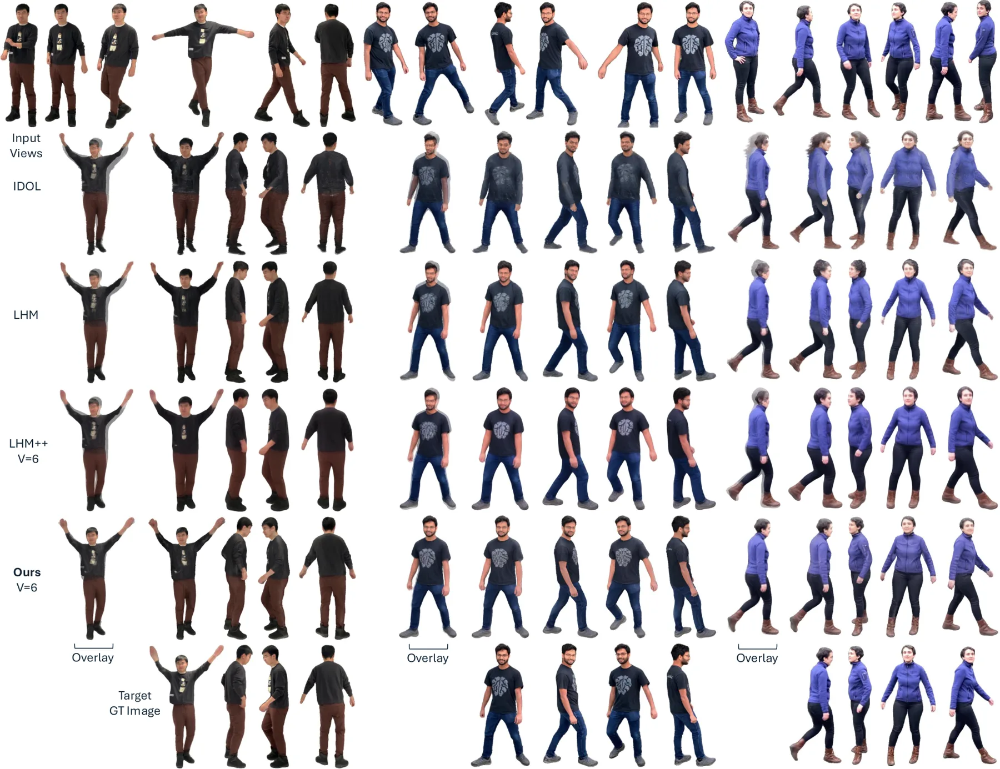

ARG-Avatar：用动画-渲染引导做高效前馈化身重建
ARG-Avatar: Animation-Rendering Guidance for Efficient Feedforward Avatar Reconstruction
一句话：它把“模板 + LBS + 渲染”已知的几何关系写进注意力坐标，用 68M 参数打赢 609M 的 LHM++，说明前馈重建的瓶颈不只是数据规模。可迁移的是“用已知几何算出 token 该看哪里”这条思路——我们的前馈重建同样有已知外参或重力方向可用。
NeuMan PSNR
trainable params
reconstruction latency
作者、单位与技术谱系 · Research context
作者与单位
研究脉络
- LHM / LHM++：大规模前馈可驱动人体重建直接对照与规模基线关系：LHM 系列是本文的主要对照：用大 Transformer + 约 300K 私有视频把前馈化身推到高质量，本文则在同一任务上用 64K 公开序列与 68M 参数反驳“必须扩展”的前提。[论文 §1 与 Table 1]
- RoPE 几何注意力：GTA / PRoPE / RayRoPE方法基座关系：FACRoPE 沿用“把几何量写进 RoPE 旋转坐标，使注意力分数依赖相对偏移”的思路，但把坐标从相机变换/光线换成“模板元素经 LBS 与渲染后的图像位置”。[论文 §2]
- 本篇推进：FACRoPE + ITR 的几何引导前馈框架本篇推进关系：把“模板几何已知”这一事实转化为注意力坐标与中间层监督，使前馈化身在少参数、少数据、少算力下超过规模化基线，并给出 V=1→6 的多视图利用率证据。[论文 §3 与 §4.2]
合作网络
- CMU Robotics Institute 署名组Jianjin Xu → Fernando De la Torre关系：共同署名[arXiv abs]
- Soham Dasgupta ↔ CMU 团队Soham Dasgupta → Jianjin Xu关系：共同署名[论文首页署名]
- LHM++ → 本文评测基线LHM++ → 本文 Table 1 对照关系：技术依赖（基线复现）[论文 §4.1]
作者与单位取自论文首页署名；谱系条目只记录论文明确写出的对照关系（LHM/LHM++）与技术基座（RoPE 几何注意力），不推断导师关系；LHM++ 的具体机构归属本文未展开，故不作补充。
方法本质拆解 · What actually changed
是不是微调？
是从头训练的小模型，不是微调大模型：骨干只有两层 ARGBlock，共 68M 可训练参数，SAM3DBody 姿态/特征提取器冻结；训练 100K 步、全局 batch 96、AdamW、lr 1e-4 余弦、bf16，在 4×A6000 上约 200 小时（125 H100 等效 GPU 小时）。训练数据全部公开（6 个数据集、6,821 人、64,142 序列），batch 内采 6 个输入视图与 6 个监督视图。
有没有额外先验或约束？
有，而且是方法的核心：模板（MHR 网格与 UV 图）、骨架与 LBS 权重、相机内外参都作为已知量进入前向，用于计算每个 token 的投影坐标与渲染深度；位置残差被约束在模板锚点附近（μ=a+o），保证 canonical 空间不漂。损失是 photometric 组合（RGB + SSIM + LPIPS + mask），ITR 的中间 token-GS 渲染损失也计入总目标，权重均分。
推理/后端到底做了什么？
推理是单次前馈：图像 → 冻结的 SAM3DBody + ConvNeXt → 两层 ARGBlock（内部做 LBS、投影、深度渲染以生成 FAC 与 ITR 引导）→ 解码 canonical 高斯与形变；没有逐人优化、没有测试时微调、没有全局 BA。速度随视图数几乎不变（V=1 为 1.8 s，V=6 为 2.3 s），因为骨干层数固定，输入视图只增加注意力里的 key。
方法本质是什么？
本质是把“已知几何”从训练信号变成注意力的坐标系：先用模板与姿态算出每个 avatar 元素应该出现在图像的哪个位置、比可见表面靠前多少，再让注意力在这个相对坐标下匹配，于是网络不必从零学对应。它没有做的是：没有生成不可见区域（V=1 弱），没有摆脱人体模板（非人体域不适用），也没有解决形变残差与 LBS 的耦合误差。
输入是多视图图像与已知人体模板/骨架/相机，改变的位置是“注意力的位置编码与中间层几何反馈”，靠 LBS+投影+深度渲染算出 token 的预期成像坐标，直接效果是用 1/9 的参数与 1/14 的算力取得更高重建精度。

桥接价值Bridge
桥接价值
我们做前馈重建时，token 与图像像素的对应往往交给注意力自己学，代价是数据与算力。这篇论文指出，只要场景里有已知的模板、骨架或相机外参，这种对应的大部分是可以算出来的：把 avatar 按观测姿态摆好、投影、渲染深度，就得到每个 token 应该落在图像的哪个位置。对多传感器系统来说这更直接——相机外参、IMU 重力方向、甚至粗略的深度先验都能给出类似的“预期投影”，可以作为注意力的坐标而不是训练信号。它的效率数字也说明：把几何先验放进结构里，比把参数量堆上去更划算。
方法与模块Method
方法摘要
化身表示是 MHR 模板 UV 图上的 264K 个高斯（每 UV 格点一个，位置 = 重心插值锚点 + 学习偏移；UV 栅格按部位自适应加密），动画用 LBS 在 UV 空间重心插值各顶点的变换，另加每姿态 10 维形变残差（位置/尺度/四元数）。网络输入每张图经 SAM3DBody（冻结）取姿态与特征、ConvNeXt 编码图像特征，两层 MV-ARGBlock 做跨视图注意力与融合，输出 token 解码成 canonical 高斯与形变。FACRoPE 的关键是把 UV token 的 RoPE 坐标设成它经 LBS + 投影 + 深度渲染后的图像平面坐标 (x, y, z−D)，与图像 token 的 (u,v,0) 对齐；ITR 则把中间层 token 解码成粗化身，用它的投影几何反哺后续层。
可迁移模块
第一是“渲染深度差作为位置编码”的具体形式：z−D（token 投影深度减去该像素渲染深度）同时编码了“在图像哪里”和“比可见表面靠前/靠后多少”，比单纯 2D 坐标多一维几何信息，可直接用于任何有候选几何的场景。第二是 rendering-in-the-loop：用中间层的粗重建去改进后续层的对应，等价于把一次廉价前向渲染当成几何自纠正，不需要额外监督。第三是“候选可以不准”的鲁棒性——消融显示哪怕候选只是中性网格，FACRoPE 仍提点，这对我们使用粗糙先验（低分辨率深度、IMU 预积分位姿）很有意义。

证据Evidence
关键证据与数字
分布外 NeuMan 上 V=6 达 30.82 dB PSNR / SSIM 0.975 / LPIPS 0.016，LHM++ 为 28.09/0.972/0.022，差 2.7 dB；多视角视频（DNARendering + 4D-Dress）28.83 vs 25.68（+3.2 dB）、3D 扫描 26.81 vs 22.49（+4.3 dB）、HumanVid 25.86 vs 22.50（+3.4 dB）（Table 1）。多视图利用率：V=1→6 提升 3.8 dB（NeuMan 27.02→30.82），LHM++ 仅 0.4 dB（27.71→28.09）；总体 23.13→26.69 vs 22.62→22.98（附录 H）。效率：68M 可训练参数（LHM 的 6%、LHM++ 的 11%），64K 公开序列（LHM 的约 21%），125 H100 等效 GPU 小时（LHM++ 的 7%）；6 视图重建 2.3 s vs 14.2 s（6.2 倍），动画 80 FPS vs 20 FPS，显存相当（附录 G）。消融：8 组 FACRoPE/ITR/Deform 组合中 FACRoPE 全部提点，与 ITR+Deform 同时在场时增益最大，第三层不加分；把 SAM3DBody 特征换成 DINOv2 仍有 30.89 dB（V=6），说明增益不来自特征骨干（附录 I）。
边界与下一步Limits & Next Step
边界与风险
作者明确承认模型没有为“补全不可见区域”训练，因此 V=1 时弱于 LHM++（NeuMan 27.02 vs 27.71），并把多视图采集当作实际使用方式（手机录一段视频）。消融的逐组 PSNR 只以 Fig.7 呈现，正文只给趋势，具体幅度待核验；另外所有基线用 SMPL-X + LHM-Track 姿态、本文用 MHR + SAM3DBody，虽然作者用 LHM++ 复现值（27.97/28.03）与原论文（27.83/27.94）对齐来说明跟踪可靠，但两套骨架的差异仍是潜在混淆。我们需要自己核验：换到非人体域（例如机械件、室内场景）时，模板与 LBS 不再存在，这套引导是否退化为普通注意力；以及 ITR 的粗渲染开销在更大分辨率下的占比。
下一步实验
最小对照：在同一前馈骨干上，一路用绝对位置编码，一路用“投影坐标 + 深度差”的 RoPE，训练预算与数据完全相同，比较收敛步数与最终 PSNR——这正是本文消融的核心设置，值得在我们自己的数据上复现一次。第二步：把我们已有的粗糙几何（低分辨率深度、IMU 预积分位姿）当作“候选”，测试引导对候选误差的敏感度，因为论文声称中性网格也能提点，这个鲁棒边界需要自己量。第三步：把 ITR 的渲染换成更便宜的 splatting 近似，看“中间层几何自纠正”的收益是否能保住，从而判断它能否进实时链路。







